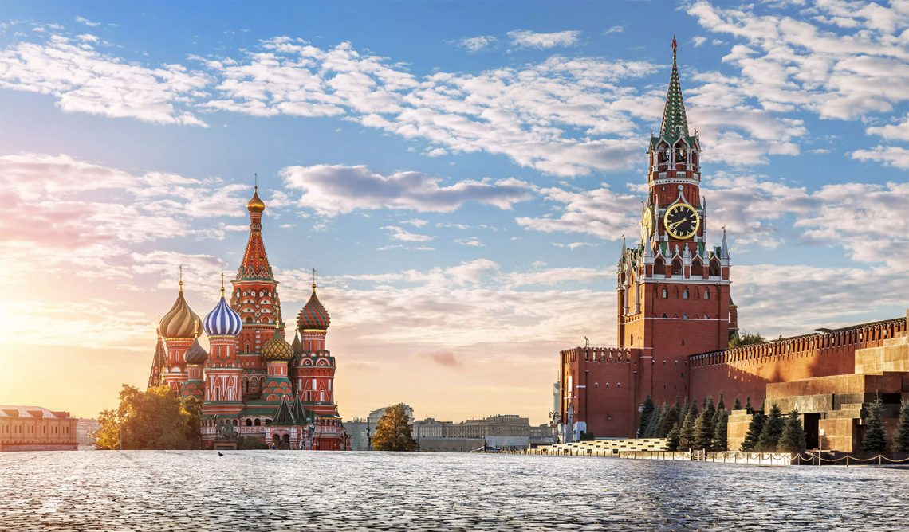

Список самых посещаемых достопримечательностей России

Красная площадь — сердце Москвы и всей России, исторический центр города.
Здесь расположены такие знаковые здания, как Кремль и ГУМ.
Кремль является резиденцией президента и символом государственной власти.
На площади также проходят основные праздничные и культурные мероприятия.
В центре площади возвышается исторический собор Василия Блаженного — яркий образец русской архитектуры, известный своей красочной и необычной формой. Также на площади находятся исторические здания, такие как ГУМ — один из самых знаменитых торговых домов России, и Мавзолей Ленина.
Кремль — древняя крепость и главный символ государственной власти России. Построен в XVI веке и является официальной резиденцией президента РФ. Внутри Кремля расположены сотни исторических зданий, среди которых административные здания, дворцы, соборы и колокольня Ивана Великого. Соборный комплекс Кремля включает соборы с великолепными фресками и иконописью, а также знаменитую Царь-пушку и Царь-колокол — символы мощи русского государства.